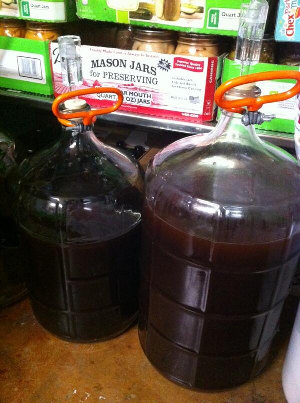

  	<div class="flex-wrap">
      
  	  <article class="tweet  " id="main">
  	    <p class="full_text">
  	      Red (ruby?) ale ready for the wee yeasty minions to do my bidding. 🍺🍻🎉 <div class="gallery"><ul><li><a href="../../tweets_media/432705618613248000-BgFHd6oCEAAwSn4.jpg"></a></li></ul></div>
  	    </p>
  	    <p class="created_at">
  	      2/9/2014, 6:40:33 PM
  	    </p>
  	    <p class="favorite_count">Favs: 0</p>
  	    <p class="retweet_count">Retweets: 0</p>
  	    <a class="permalink" href="../432705618613248000">link</a>
  	  </article>

  	</div>
  </div>
